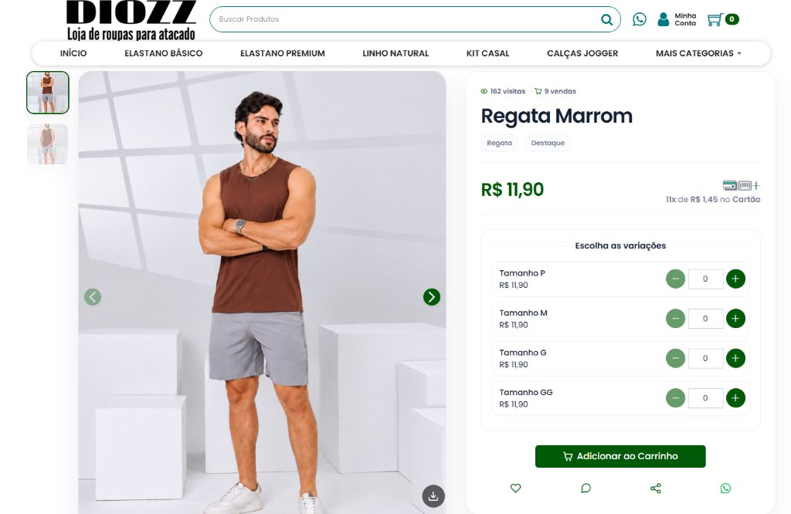

Evolução do catálogo atual (facilzap.app.br/diozz) para uma estrutura proprietária de alta velocidade,
com sincronização inicial via API da FácilZap (Fase 1) e independência total com Painel Configurável e Romaneio (Fase 2).
| Etapa | O que é entregue | Fonte de Dados | Benefício para a Diozz |
|---|---|---|---|
| Fase 1 Vitrine Híbrida |
Novo catálogo mobile-first, slug com + / - direto no carrinho, carrinho persistente, notificação global e recuperação de carrinho via BullMQ. | API FácilZap + Webhooks com cache em Redis | A equipe não muda nada na rotina atual enquanto a loja já ganha velocidade, SEO e mais conversão. |
| Fase 2 Sistema Próprio |
Painel Administrativo configurável, cadastro de produtos/categorias, estoque próprio, etapas de pedido e impressão de Etiqueta/Romaneio. | PostgreSQL Próprio (migração assistida) | Elimina mensalidades/limites da FácilZap e entrega controle absoluto para os funcionários. |

localStorage + banco ao atualizar ou fechar o app.Recebido → Pago → Em Separação → Despachado.X do carrinho abandonado (BullMQ), ativar/desativar notificação global, categorias, banners e regras de atacado.Dentro de cada pedido no Painel Admin, o botão "Imprimir Etiqueta / Romaneio" gera instantaneamente o layout térmico (10x15cm) ou A4 para o separador conferir os tamanhos e colar no pacote da excursão ou transportadora.
Protótipo Interativo: Todo esse fluxo já está navegável no arquivo index.html entregue junto a este PDF.
| Semana | Entregas Principais |
|---|---|
| Semana 1 | Infraestrutura (Next.js, Node.js, PostgreSQL, Redis) + Sync de leitura com a API FácilZap. |
| Semana 2 | Vitrine Mobile-First + Slug do Produto (galeria, + / - direto no carrinho, animações, avaliações e perguntas). |
| Semana 3 | Checkout enxuto (Nome/Telefone), Área do Cliente, Notificação Global (SSE) e Fila BullMQ de Carrinho Abandonado. |
| Semana 4 | Painel Admin configurável, Controle de Etapas, Impressão de Etiqueta/Romaneio e Go-Live da Fase 1. |